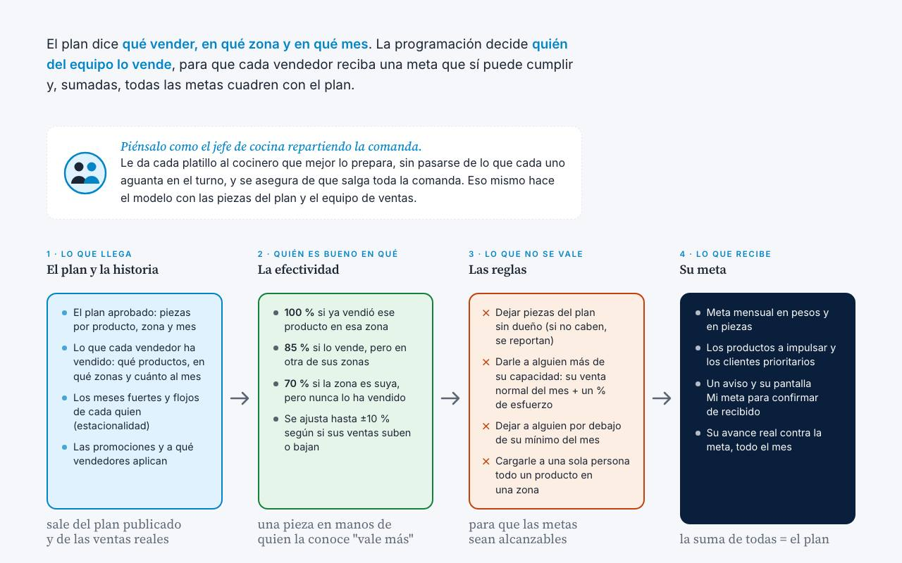
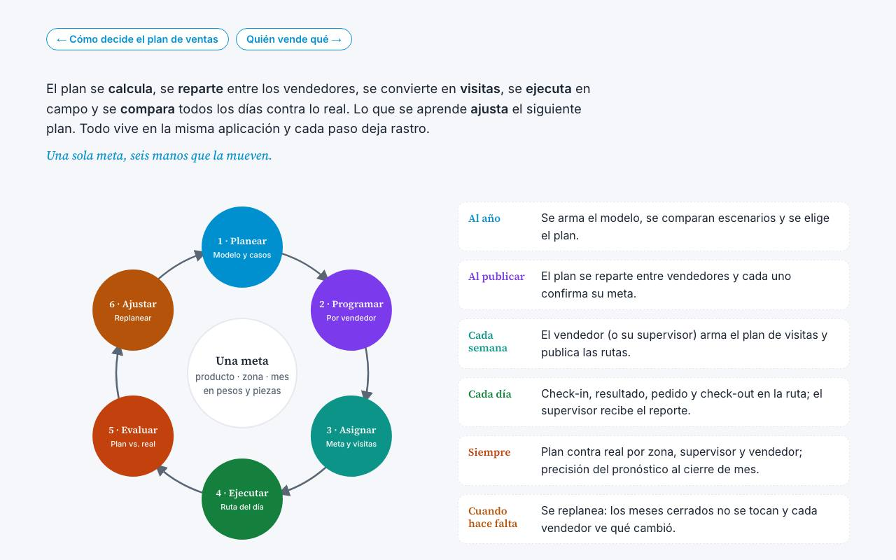
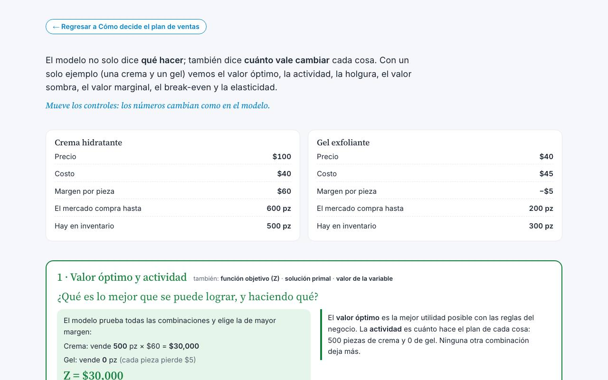

Ideas que se pueden operar.
Cómo pensamos la planeación y la operación: bocetos que explican, con un ejemplo concreto, las ideas detrás de nuestro trabajo y de Infinity Workflow.
 Boceto · mapa de la aplicación
Boceto · mapa de la aplicaciónMapa de Infinity Workflow
 Planeación de ventas
Planeación de ventasCómo decide el plan de ventas
El modelo es una calculadora que revisa todas las combinaciones posibles de qué vender, dónde, cuándo y cuánto comprar, y se queda con la que deja más margen sin romper ninguna regla del negocio.
 Dos formas de planear
Dos formas de planearPronosticar u optimizar
Las series temporales miran el pasado para decir cuánto se va a vender. El modelo LP toma eso y decide cuánto conviene vender y comprar para ganar más sin romper las reglas del negocio. No compiten: una predice y el otro…

Programación de zonas y vendedoresQuién vende qué
El plan dice qué vender, en qué zona y en qué mes. La programación decide quién del equipo lo vende, para que cada vendedor reciba una meta que sí puede cumplir y, sumadas, todas las metas cuadren con el plan.

Planeación · el ciclo completoCiclo del plan
El plan se calcula, se reparte entre los vendedores, se convierte en visitas, se ejecuta en campo y se compara todos los días contra lo real. Lo que se aprende ajusta el siguiente plan. Todo vive en la misma aplicación y…

Planeación · cómo leer los resultadosValores del modelo
El modelo no solo dice qué hacer; también dice cuánto vale cambiar cada cosa. Con un solo ejemplo (una crema y un gel) vemos el valor óptimo, la actividad, la holgura, el valor sombra, el valor marginal, el break-even y …